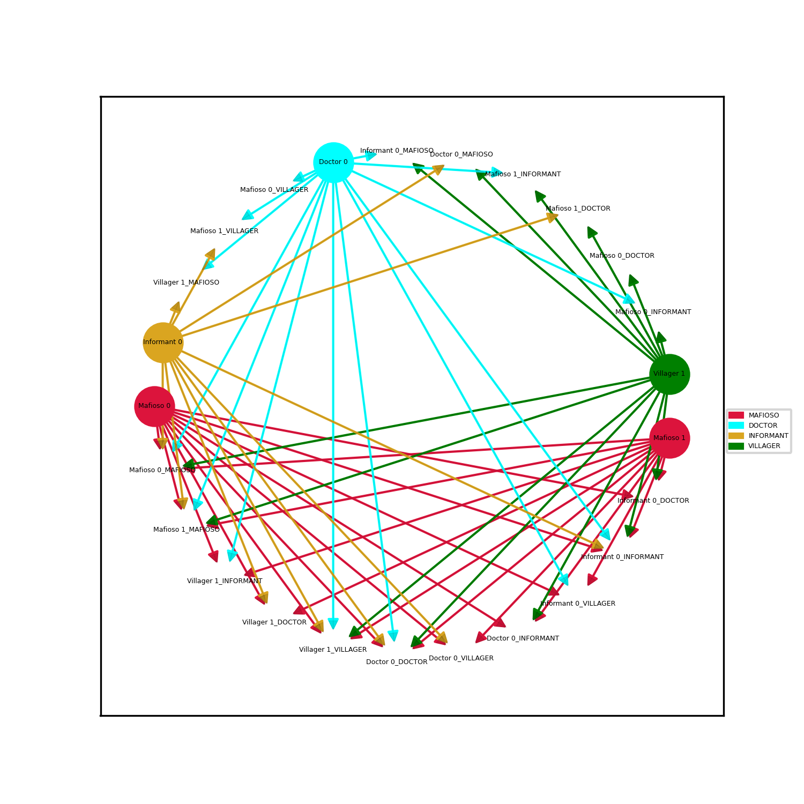
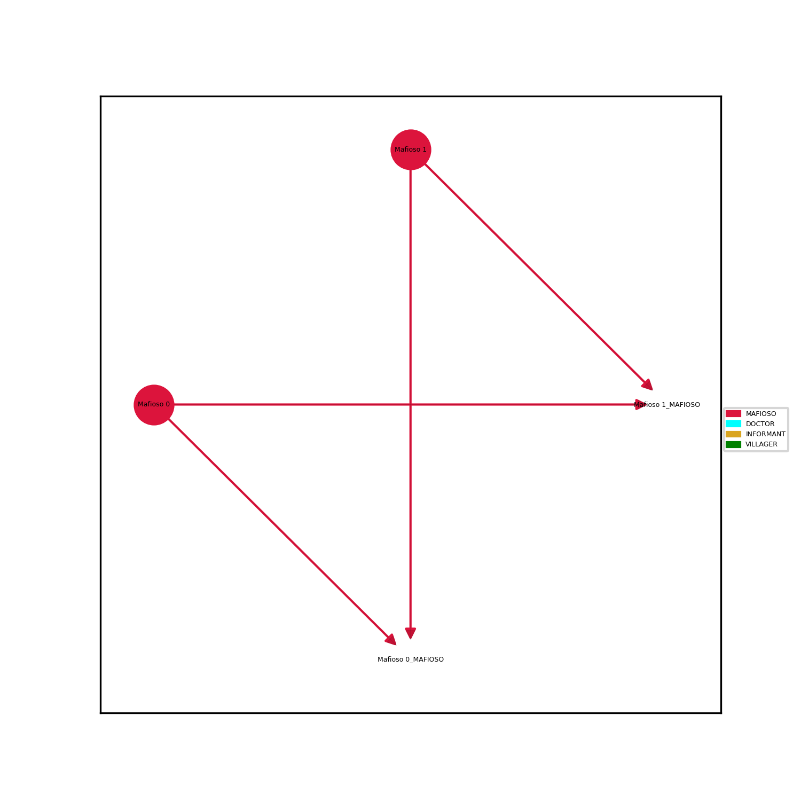
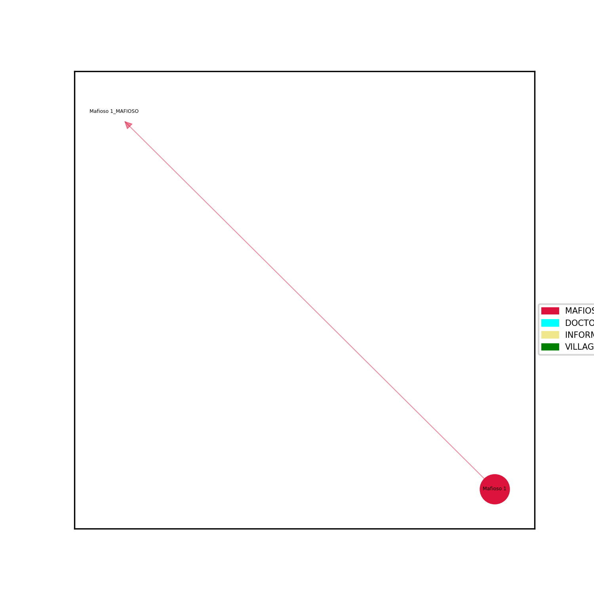
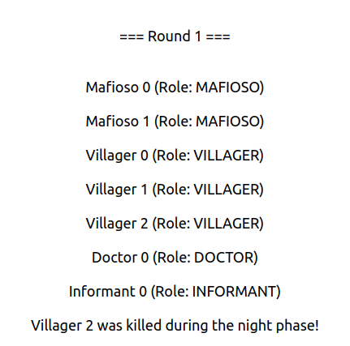
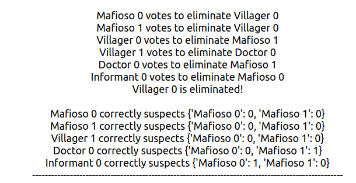
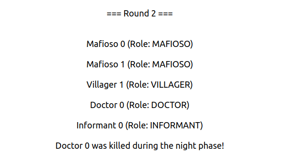
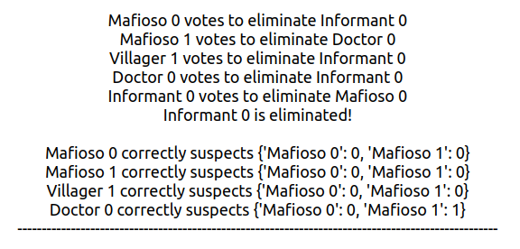
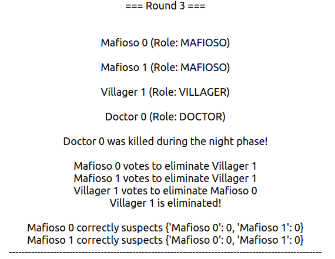

The GUI features a start button to initiate the game, a game log for displaying the status and actions of each player, a players list to show the remaining players, and a plotting area to display the Kripke model after each round.
To recapitulate, the game logic is encoded in various functions. For instance, the playMafia() function details the process of a round including the night phase (when mafiosi vote to kill a villager), the potential protection by a doctor, the possible revelation by an informant, and the day phase (when all players vote to eliminate a suspected mafioso). The Kripke model is updated accordingly after each round. The game ends when either all mafiosi are eliminated, leading to a villagers' win, or when the number of mafiosi is equal to the number of villagers, leading to a mafiosi's win. The game also supports a tie scenario where neither parties can get rid of eachother (i.e. 1 mafiosi vs 1 villager).
The GUI is implemented using PyQt5, while the Kripke models are created using NetworkX, a Python package for the creation, manipulation, and study of the structure, dynamics, and functions of complex networks. The Kripke models are visualized using Matplotlib, a plotting library for the Python programming language.
This initial Kripke model contains nodes which represent players in the game, their roles, and their beliefs about other players. These nodes are interconnected by edges to represent the relationships among the players. A variety of colors is used to distinguish different roles like Mafioso, Doctor, Informant and Villager - this can be read off the label to the right. That is, each empty or invisable node represents a belief about a role the origin node pointing to this belief believes the player is playing: belief -> "ROLE 1_PlayersActualRole".
During each round, players take turns to vote on eliminating a player they suspect to be a Mafioso. The game logic is coded to mimic the behaviors of different roles. For instance, Mafiosi are given a strategy to kill villagers, doctors can protect certain players, and the informant can reveal the identity of a Mafioso. The Kripke model is updated after each round, providing a visual representation of the evolving game state.
 The text logs provide a real-time detailed summary of each round of the Mafia game simulation. They start with the announcement of a new round and list all the currently alive players along with their roles. The logs then outline the results of the night phase, where the Mafia selects a player to "kill." The Doctor(s), if present and alive, also choose a player to protect. The game log records if the targeted player was saved by the Doctors or killed by the Mafia. If the Doctor role is active, the logs also track whether Doctors reveal their identity and knowledge. Additionally, if the Informant role is active and the Informant's identity isn't revealed yet, the logs record if the Informant reveals the identity of a known Mafia member. During the day phase, players vote to eliminate a player whom they suspect is a Mafia member. The logs record these votes and the result of the vote. The logs then report any suspicions players had about Mafia members and whether they were correct. Lastly, they check and announce if any faction (Mafia, Villagers, Doctors, or Informants) has won the game or if the game continues to the next round. (The text logs are too long to be displayed here fully, so they have been broken down into several pieces bellow.)




In more detail, the images listed above can be read as follows. The first line of each round typically begins with "Round X," where X represents the current round number. The list of players alive, along with their roles, follows this. Afterwards, the output will show the events of the 'night phase'. This includes the actions of the Mafia, Doctors, and Informants. For the Mafia, you will see "Mafia decided to kill Player Y," where Y represents the targeted player. For the Doctor, if present and alive, you may see "Doctor(s) decided to save Player Z," where Z is the player they chose to protect. The Informant, if they decided to reveal a Mafia member, you will see a message like "Informant decided to reveal Player A as a Mafia member." The 'day phase' follows the night phase, starting with the outcomes of the previous night. If a player was killed, it would be presented as "Player Y was killed," if they were saved by a doctor, you would see "Player Y was saved." This phase also includes the voting process where players suspecting others to be Mafia members cast their votes. The result of this vote, and the subsequent fate of the player, will also be displayed. The log ends with checking if there is any win condition met. For instance, if all Mafia members are killed, you will see "Villagers have won." Alternatively, if the number of Mafia members equals the number of Villagers, the game ends in favor of the Mafia, displayed as "Mafia have won." Finally, the results of the suspicions made by the players are presented, indicating if they were correct or not in their assumptions.